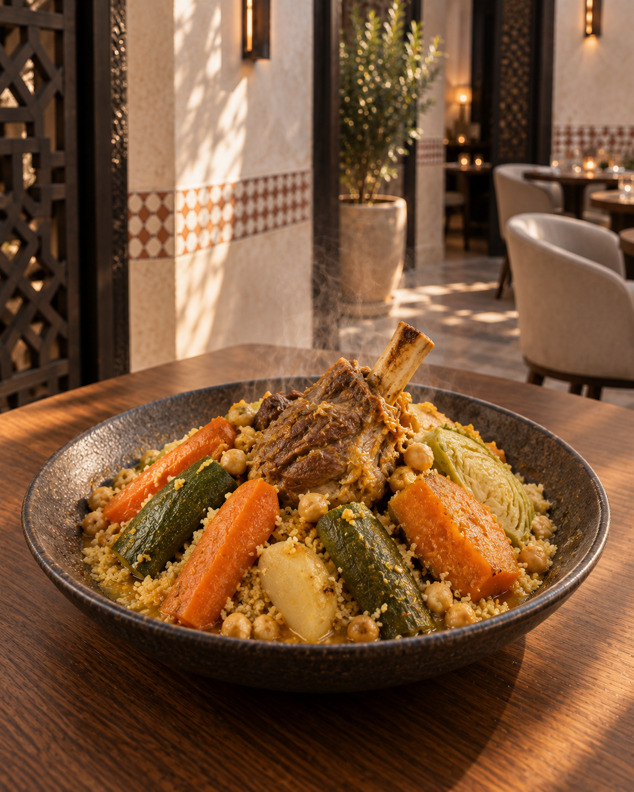

Royal Dar Zafran
Couscous
The Friday dish, perfected over generations
Our house couscous — hand-rolled from scratch, steamed seven times over a slow broth. Served with braised lamb shank, merguez, and seven slow-cooked vegetables. A ritual, not a side dish.
"Moroccan cuisine is not a recipe. It is a set of convictions — about hospitality, about memory, about what a meal is for. We cook from those convictions every day."
A Moroccan Ending
Every meal ends
with tea
The pouring of mint tea is not a formality at Dar Zafran. It is the moment when dinner becomes conversation — when the table belongs to you alone. Gunpowder green tea, fresh spearmint, and a pour from high enough to raise a foam. Some rituals are not improvable.
Secure Your Table
We recommend booking in advance to guarantee your preferred time and table.